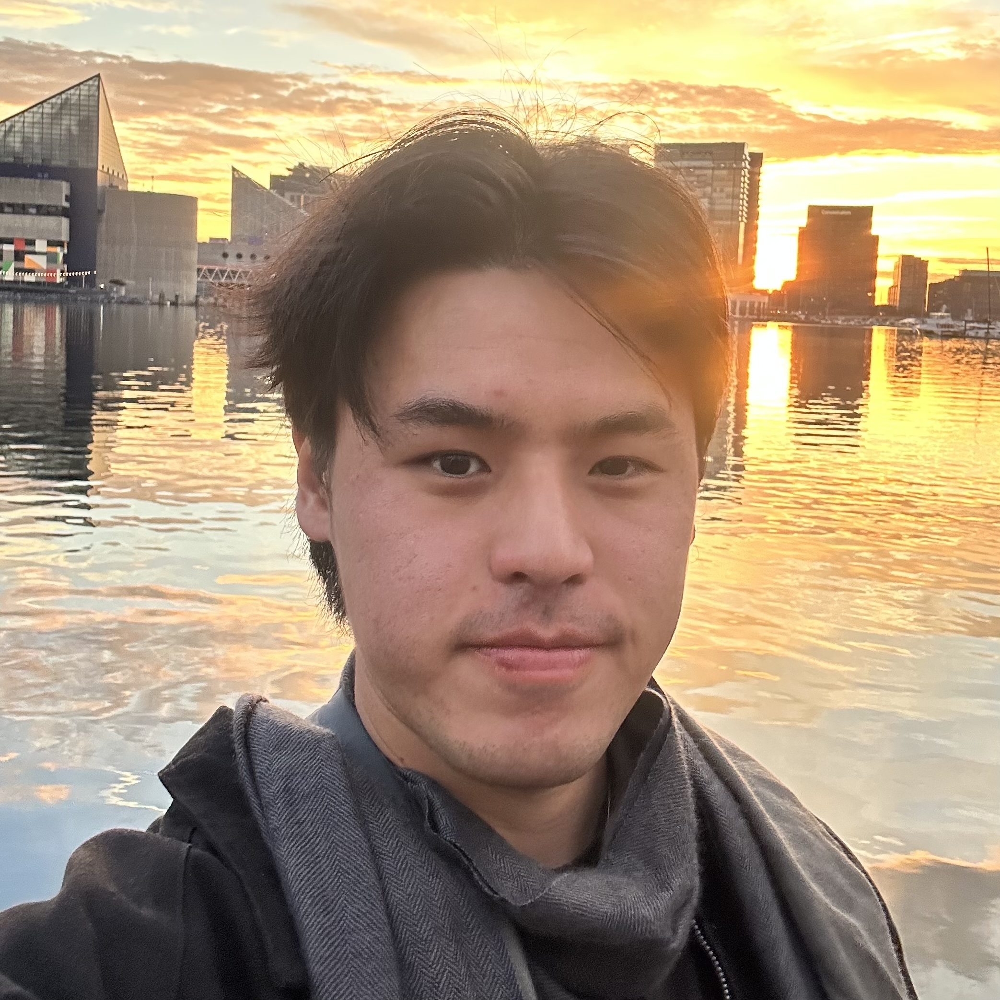

Austen Liao
computer science student
@ UC Berkeley
austenliao@berkeley.edu
About Me
Hello! I'm Austen, a PhD student in Johns Hopkins University's Center of Language and Speech Processing. Previously, I completed my undergraduate studies at UC Berkeley studying computer science and data science. As a researcher, I was fortunate to be advised by Nicholas Tomlin and Dan Klein in the Berkeley NLP Group.
My current research interests are in autonomous refinement, scalable oversight, and LLM faithfulness/explainability. I am broadly interested in natural language processing and the problems that LLMs can solve as an interface between humans and their machines.
Some more about me:
- Notable experiences at Berkeley: I became involved with teaching through serving on course staff for CS188, Berkeley's upper-division course on artificial intelligence. I also served on the research committee and participated in NLP-based client projects for Machine Learning @ Berkeley.
- Between degrees, I spent 7 months working as a software engineer at ServiceNow as part of their time-series database team. For this position I moved to San Diego, which has since become my favorite place in the world.
- Some of my favorite hobbies are video editing, surfing (if applicable), and terrorizing civilians in an inflatable Kirby costume.
Papers
Efficacy of Language Model Self-Play in Non-Zero-Sum Games
Austen Liao*, Nicholas Tomlin*, Dan Klein. NeurIPS Language Gamification Workshop. 2024.
EnDive: A Cross-Dialect Benchmark for Fairness and Performance in Large Language Models
Abhay Gupta*, Jacob Cheung, Philip Meng, Shayan Sayyed, Austen Liao, Kevin Zhu, Sean O'Brien. EMNLP Findings, 2025.